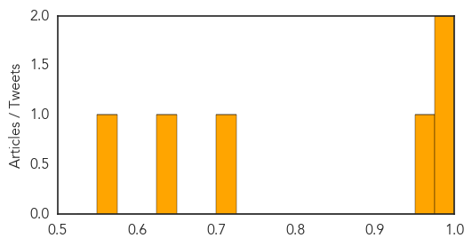
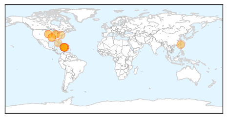
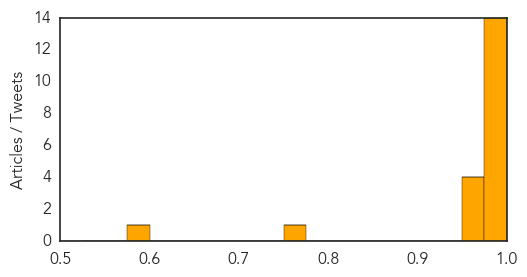

Cholera
30-Day Web Trend
10 alerts, 7 warnings

30-Day Twitter Trend
0 alerts, 0 warnings

Article Locations

Article Confidences
Top Articles:
- 0.986
- South Sudan reports nearly 1,500 cholera cases: UN
- 0.976
- South Sudan cholera outbreak spreads, nears 1500 cases
- 0.970
- Juba labs to conduct first cholera sample tests - South Sudan
- 0.711
- MTN, UNICEF Launch School Sanitation Drive in Face of Cholera - South Sudan
- 0.629
- ANC recalls Bloemhof mayor - Politics
- 0.555
- Threat of disease in Iraq villages flooded by militants
Top Tweets:
- 0.711
- RT: SouthSudan: MoH Statement on the Current Cholera Outbreak - 1459 cases, 31 deaths http://t.co/Bg8bpQFM05 via
Chikungunya
30-Day Web Trend
5 alerts, 5 warnings
30-Day Twitter Trend
1 alerts, 0 warnings

Article Locations
Article Confidences
Top Articles:
- 0.999
- Indiana has first case of new mosquito-borne virus
- 0.999
- First Nebraska case of chikungunya reported
- 0.998
- Chikungunya virus case confirmed in Indiana
- 0.998
- Nebraska reports chikungunya case in traveler to Haiti
- 0.998
- Department of Health confirms case of chikungunya virus in Allen County
- 0.998
- Chikungunya rises in Caribbean as US notes imported cases
- 0.998
- First Nebraska Case of Mosquito-Borne Virus
- 0.996
- Lee County man hospitalized from mosquito-borne infection
- 0.996
- KTIV News 4 Sioux City IA: News, Weather and Sports
- 0.996
- Chikungunya Outbreak: Emergency Aid Bound for Haiti - Haiti
- 0.994
- Travelers to Caribbean cautioned on mosquito-borne chikungunya
- 0.993
- Not chikungunya, say Costa Rica health officials -The Tico Times
- 0.991
- Rare Virus Infects Nebraska Woman
- 0.986
- Rare Mosquito Disease Found in Nebraska
- 0.972
- Chikungunya fever confirmed in Orange County, 2nd in Central Florida
- 0.966
- Chikungunya fever case reported in Orange County
- 0.963
- ABC-7.com WZVN News for Fort Myers, Cape Coral & Naples, Florida
- 0.960
- Chikungunya expands in the Caribbean and Latin America
- 0.752
- Number of patients with Chikungunya symptoms grows
- 0.586
- Travelers to Caribbean cautioned about mosquito-borne chikungunya
Top Tweets:
-
No tweets found for Jun 09, 2014